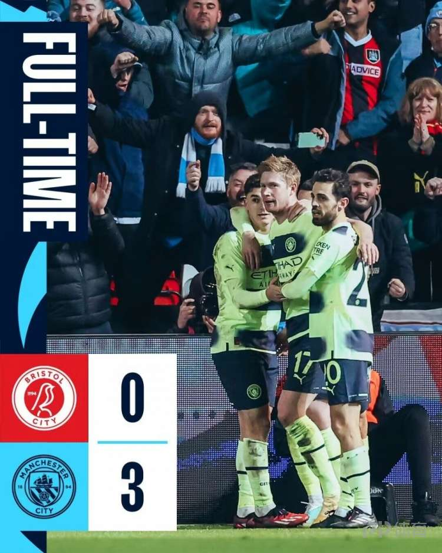
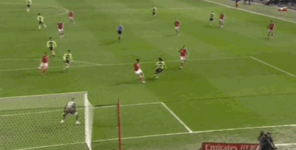
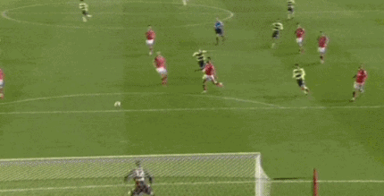

时间：2023年03月1日 06:52:52 来源：PP体育 | 体育24小时热点

北京时间3月1日04:00，英格兰足总杯1/8决赛曼城客场挑战布里斯托城的比赛，上半场菲利普斯中柱，福登推射破门，下半场福登完成梅开二度，德布劳内远射破门，最终曼城客场3-0布里斯托城成功晋级。
第7分钟，曼城打开记录！德布劳内右路直塞禁区马赫雷斯横传门前福登后点包抄推射破门，布里斯托城0-1曼城。如下“进球集锦1”GIF图
第74分钟，曼城再下一城！阿尔瓦雷斯禁区中路做球福登右路推射打在防守球员身上弹进球门，布里斯托城0-2曼城。如下“进球集锦2”GIF图

第81分钟，曼城扩大比分！格拉利什横传德布劳内中路带球突施冷箭远射破门，布里斯托城0-3曼城。如下“进球集锦3”GIF图

英超曼城首发：18-奥尔特加-莫雷诺（45'31-埃德森）、82-里科-刘易斯、25-阿坎吉、3-鲁本-迪亚斯、6-阿克（83'80-帕尔默）、4-卡尔温-菲利普斯、17-德布劳内、20-伯纳多-席尔瓦（88'32-佩罗内）、26-马赫雷斯（71'10-格拉利什）、47-福登（83'21-塞尔希奥-戈麦斯）、19-胡利安-阿尔瓦雷斯
替补未出场：2-沃克、8-京多安、9-哈兰德、16-罗德里、21-塞尔希奥-戈麦斯
英甲布里斯托尔城首发：12-奥利里、19-坦纳（45'14-魏曼）、26-维纳、22-卡拉斯、16-布林（78'3-杰伊-达席尔瓦）、6-马修-詹姆斯（89'10-安迪-金）、8-乔-威廉斯（89'35-奥马尔）、17-赛克斯、7-亚历克斯-斯科特、21-韦尔斯（83'36-弗兰克斯）、20-贝尔
替补未出场：2-凯恩-威尔逊、23-海金、37-托马斯、42-莫里森
Copyright ©2023-2024 小强体育工作室
版权所归小强